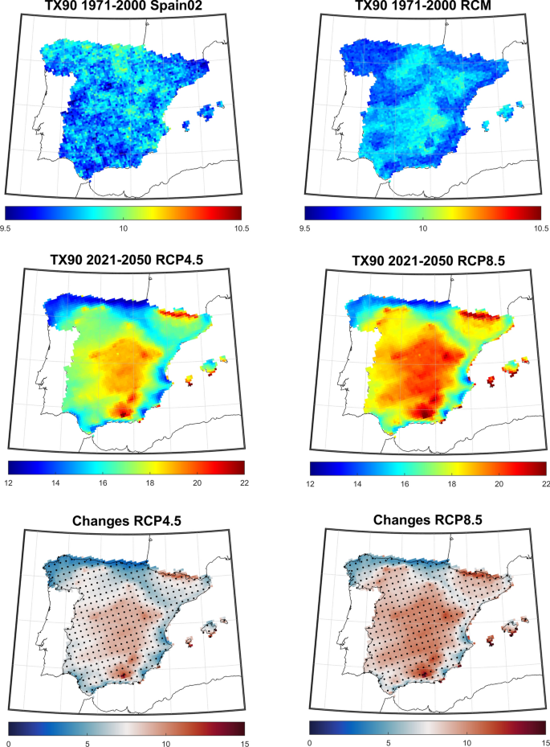

4.1 Summary of Lecture 4
The summary criterion will refer to the summary of the policy and city you have selected.
4.1.1 City — Madrid, Spain
Temperture difference in 2020 compared to 1981-2010 average. Source:ERA5.https://climate.copernicus.eu/copernicus-2020-warmest-year-record-europe-globally-2020-ties-2016-warmest-year-recorded Climate change is a global phenomenon, yet affects different countries and places at different rate. While global warming is not a globally uniform warming phenomenon, some regions are affected at greater level. The figure above shows the temperature difference in 2020 compared to the average temperature in 1981-2020. The large variations in temperature difference in different regions indicated that climate change has unequal effects on temperature globally. Global Climate Risk Index (https://reliefweb.int/report/world/global-climate-risk-index-2021) is an index generated by Germanwatch, it analyses quantified impacts of extreme weather events and ranks countries according to the level of exposure and vulnerability to extreme events. The long-term Global Climate Risk Index (CRI) published in 2021 examines global data from 2000-2019, Spain ranked 29 out of 180 countries. with CRI score of 46.50. This risk score indicates a relatively lower risk to other countries because lower risk scores have higher risk to climate impacts, such as Puerto Rico ranked 1st with risk score of 7.17.
Spain is getting warmer and drier than previous decades, the Meditarranean region in Spain has increased by 1.5 degree Celsius, which is more than global average increase of 1.1 degree Celsius. The figure below shows the spatial patterns of temperature observations and simulations with TX90 index of Spain, where TX90 indicates the percentage of warm days when daily max temperature > 90th percentile. The third row of the figure shows changes in projected TX90 index (% of days) for the period 2021–2050 concerning the period 1971–2000 for both scenarios Lorenzo and Alvarez (2022). The grey dots mark the areas where changes are significant at the 5% significance level from the Wilcoxon ranksum test Lorenzo and Alvarez (2022).

spain temperature projection. Source: https://link.springer.com/article/10.1007/s11069-022-05306-x The temperature that exceeds 35ºC in July 2021 in Spain was shown in the GIF below. A meteorologist for the State Meteorological agency (AEMET) stated that large parts of the peninsula will enter one of the hottest regions on the surface of the planet. It will be an extension of the traditional summer 'heat belt' that usually extends from Algeria to India Benayas (2021). In order to mitigate and combat climate change, different approaches regarding to different city context are proposed. The following policy will be focused on Madrid, Spain.

4.1.2 Policy: “El Bosque Metropolitano”
“El Bosque Metropolitano” is a Madrid, the capital city of Spain has an urban redevelopment programme that aims to combat climate change by building a 74km-long metropolitan forest in the city. The programme aims to improve air quality, decrease desertification and flood risks, support biodiversity, and act as a thermal regulator for the city as it will mitigate Madrid's urban heat island. It is a long-term city project that will take about 12 years to complete. When this forest reaches maturity, it will absorb 170,000 tons of CO2. The proposed plan is to create environmental belt around Madrid's perimeters with new parks, children's zones, dog trails and hiking and biking routes for city-dwellers and tourists.
The Strategic Planning of the Madrid Metropolitan Forest is shown below.

Strategic Planning of the Madrid Metropolitan Forest. Source: https://mymodernmet.com/madrid-urban-forest/ The existing woodlands in the northern part will be connected with green metropolitan rings in the south and east parts as they appear to have fewer spaces and less connected. The authority considered the southern part as a great opportunity to make interconnected green infrastructure. The first phase will take place in areas that allow immediate interventions including Vicálvaro and Villa de Vallecas.
While this is a long-term policy that is expected to finish in 12 years, various uncertainties and challenges are faced on implementing different phases of greening in the city. Hence, remote sensing techniques can be used to identify and provide suggestions in combating these challenges
https://coolcoalition.org/el-bosque-metropolitano-madrid-announces-urban-forest-plan-to-combat-urban-heat-and-pollution/
shttps://www.bloomberg.com/news/articles/2022-03-15/madrid-tree-planting-effort-pits-residents-v-bosque-metropolitano
4.2 Application
Since the project aims to not only combat climate change, but also on air quality. Hence, in the southern part, remote sensing could be adopted to identify air quality in different levels
- The application criterion will refer to how the remotely sensed data you sourced could be used to assist with contributing to the policy goal. How could the data be applied to solve the policy challenge.
4.3 Reflection
- The reflection criterion will refer to what you have learnt in relation to the policy, city and the application of the data.
Benayas, Victoria Torres. 2021. “Spain Braces for ‘Extreme’ Weekend Heat with Temperatures Set to Top 44ºc.” https://english.elpais.com/spain/2021-07-09/spain-braces-for-extreme-weekend-heat-with-temperatures-set-to-top-44c.html.
Lorenzo, M. N., and I. Alvarez. 2022. “Future Changes of Hot Extremes in Spain: Towards Warmer Conditions.” Natural Hazards 113 (1): 383–402. https://doi.org/10.1007/s11069-022-05306-x.